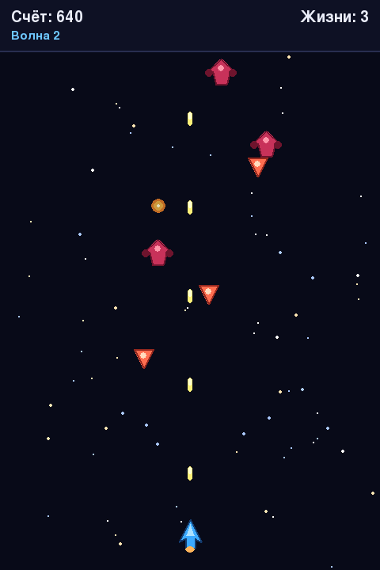

Глава 21 · Проект: космический шутер
Собираем финальную версию игры
Все разделы 21.9–21.24 — в одном читаемом файле, действительно запускаемом прямо сейчас.
Все разделы 21.9–21.24 собираются в один файл —
projects/pygame/space-shooter/space_shooter.py. Он не разбит на
несколько модулей: проект достаточно компактен, чтобы один читаемый файл был понятнее, чем
россыпь из десятка мелких.
projects/pygame/space-shooter/space_shooter.py
Что изменилось по сравнению с первой рабочей версией (21.8)
| Раздел 21.8 (checkpoint) | Финальная версия (21.25) | |
|---|---|---|
| Организация кода | Функции и глобальные переменные | Классы Game/Player/Bullet/Enemy/Explosion |
| Движение | Пикселей за кадр, зависит от FPS | px/s через Vector2 и delta time |
| Графика | Закрашенные прямоугольники | Собственные PNG-спрайты |
| Звук | Нет | Три оригинальных синтезированных звука |
| Конец игры | Одно столкновение — мгновенный конец | Система жизней с неуязвимостью |
| Сложность | Постоянная | Растёт плавно вместе со счётом |
| Состояния | Одна булева переменная | GameStatus: MENU/PLAYING/PAUSED/GAME_OVER |
| Перезапуск | Только перезапуск Python | Enter на экране Game Over |
| Взрывы | Нет | Анимация из нескольких кадров |
| Тесты | Нет | 37 автоматических тестов, включая FPS-независимость |

★★★ Задача повышенной сложности
Ещё один тип врага
Добавьте третий EnemySpec — например, "bomber": медленный, но с большим количеством очков и собственным спрайтом (расширьте scripts/generate_chapter_21_assets.py).
★★★ Задача повышенной сложности
Бонусы на игровом поле
Добавьте класс PowerUp: подбираемый объект, временно уменьшающий FIRE_INTERVAL после столкновения с кораблём — используйте тот же приём таймера, что и для неуязвимости.
Практика: собираем и запускаем финальную игру
Pygame открывает нативное окно Python — выполните локально в VS Code, PyCharm или Jupyter
Практика выполняется локально